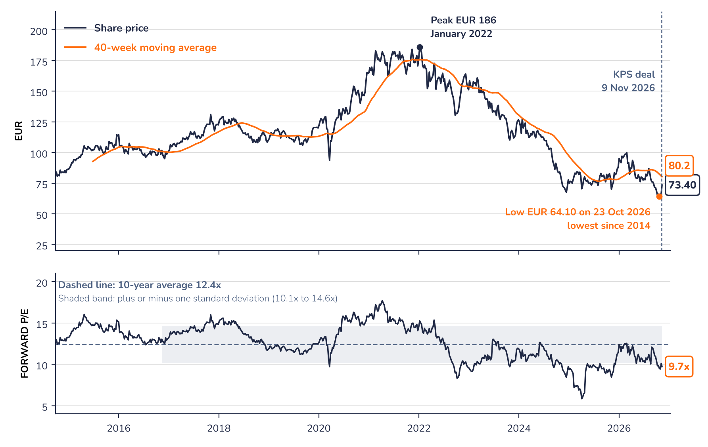

The share and its owners

A long decline, a first rebound
The share fell about 60% from its January 2022 peak of EUR 186, as the end of post-Covid destocking, higher energy costs and weak demand hit board prices and earnings. The deal triggered the first sharp rebound in months, from EUR 66.80 to EUR 74.10 in a week.
Levels to watch
The share is still below its 40-week moving average (EUR 80.2). A move back above that level could confirm that the deal has changed the trend; the October low of EUR 64.10 is the level to watch on the downside. At 9.8x, the forward P/E sits just below the lower end of its usual range, more than one standard deviation under its 10-year average of 12.4x.
The founding families hold about 58% of the shares through a syndicate; the rest is free float. For an outside shareholder, family control cuts both ways. It brings a long horizon, a conservative balance sheet and a habit of returning cash, and here incentives are aligned: the families receive 58% of any special distribution, which makes it more likely to happen. The deal also shows the families are open to bold portfolio moves and to outside capital, something the market had not assumed.
On the other side, a takeover premium is unlikely, minority shareholders have little say on the use of the cash that remains (MM mentions strategic opportunities as well as debt repayment), and a 42% free float on a EUR 1.5bn company limits liquidity.